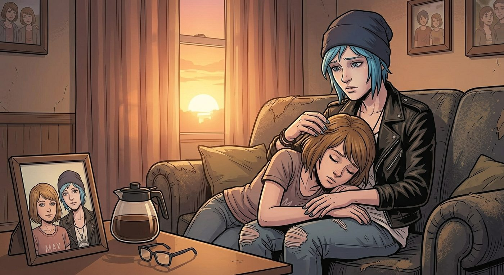

沒有預警的頭痛

一、突如其來
那天下午,兩人窩在客廳看電視,Max 忽然皺眉,伸手按住太陽穴。
「妳還好嗎?」Chloe 察覺到她的異樣,立刻轉頭。
「頭有點……」Max 話還沒說完,一滴鮮紅的血,毫無預警地從鼻子滑落下來,滴在她攤開的手心裡。
「Max!」Chloe 瞬間慌了,一把抓過旁邊的紙巾按住她的鼻子,「妳沒用能力吧?妳剛才根本沒——」
「我沒有,」Max 的聲音有點發悶,被紙巾捂住鼻子,含糊不清,「我什麼都沒做,就是突然……」
Chloe 顧不上多想,抓起車鑰匙,連拖帶拽地把 Max 塞進車裡,直奔鎮上的診所。
二、檢查結果
醫生仔仔細細地做了一輪檢查——量血壓、抽血、簡單的神經反應測試,又皺著眉盯著儀器螢幕看了好一會兒。
「從目前的檢查結果來看,」醫生摘下眼鏡,語氣裡帶著一絲困惑,「妳的各項生理指標其實都在正常範圍內,血壓、心跳、血液檢測都沒有異常,物理層面上,我暫時看不出明確的問題。」
「那她怎麼會突然頭痛流鼻血?」Chloe 追問,語氣裡藏不住焦急。
「有可能是壓力性的偏頭痛,」醫生斟酌著用詞,「這種情況有時候找不到明確病因,近期如果生活壓力大、睡眠不規律,身體會用一些意想不到的方式反應出來。建議這幾天多休息,如果症狀反覆或加重,再回來做進一步檢查。」
Max 點點頭,沒有多說什麼。
三、回家路上
車子行駛在回家的路上,Chloe 一直沉默著,手指緊緊攥著方向盤,指節都有點發白。
「妳在想什麼?」Max 察覺到她的異樣。
Chloe 沉默了很久,才終於開口,聲音有些發澀:「是不是……那次『雙保結局』的鍋?」
「什麼意思?」
「妳那次,」Chloe 的聲音低下去,「在暗房裡,為了同時保住我和小鎮,把能力用到極限,那種超負荷的代價,是不是留下什麼後遺症了?是不是……是我害的?」
車廂裡陷入一陣沉默。
「Chloe,」Max 終於開口,語氣異常堅定,「那個決定,是我自己做的。不是妳逼我的,也不是妳求我的——是我自己,清清楚楚地知道後果,依然選擇那麼做。」
「可是——」
「沒有可是,」Max 打斷她,語氣柔和了幾分,卻依然堅持,「如果真的有什麼代價要承擔,那也是我自己選擇要承擔的東西,跟妳無關。妳不准把這件事,又攬到自己身上變成妳的錯。」
Chloe 握著方向盤的手,微微鬆動了一些,眼眶卻有點發熱,沒有再說話。
四、不肯鬆開的手
回到家後,Max 說想躺一會兒,Chloe 扶著她上樓,替她掖好被子,轉身想去倒杯溫水。
手腕卻被一把抓住。
「別走。」Max 的聲音有點虛弱,卻異常清晰。
Chloe 回頭,看到她眼底藏著一絲不易察覺的、近乎脆弱的驚慌。
「我就是……」Max 的手指收得更緊了些,像是抓著什麼救命稻草,「怕我閉上眼睛,再睜開的時候,妳又不見了。」
Chloe 的心猛地一揪,什麼話都沒再說,只是重新坐回床邊,俯身輕輕把 Max 整個人攬進懷裡,下巴抵在她的髮頂。
「我在這裡,」她的聲音很輕,卻帶著不容置疑的篤定,「哪裡都不去,妳放心睡。」
Max 的身體漸漸放鬆下來,緊抓著 Chloe 手腕的力道,也一點一點鬆懈,最終只是安靜地窩進她懷裡,呼吸漸漸平穩。
窗外夕陽的餘暉透過窗簾縫隙灑進來,落在兩人交疊的身影上。Chloe 低頭看著懷裡漸漸睡去的人,伸手輕輕替她拂開額前的碎髮,眼神裡的擔憂,久久沒有散去。